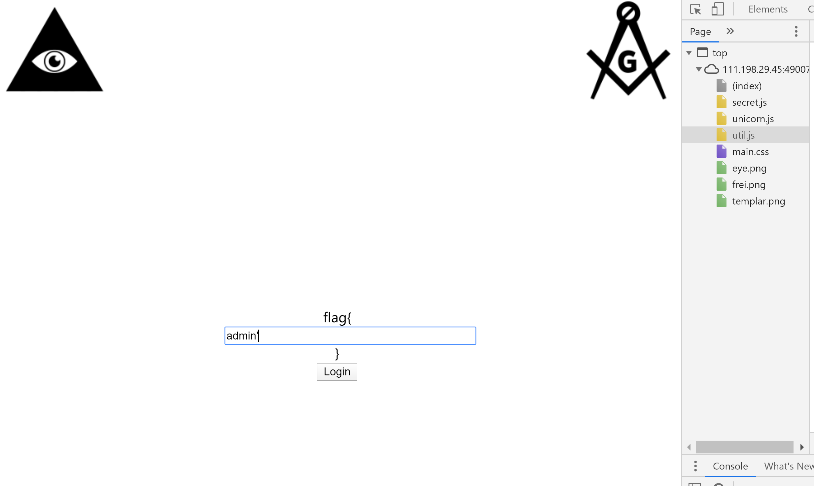

0x01 前要与心得
感觉全篇坐下来，基本就是一道纯JS逆向题，不知道为什么分类到web里。
0x02 解题流程与思路

1 |
|
2.根据源码，我们能找到3变量o1,o2,o3。同时找到3个JS文件，稍微查了一下，发现Unicorn.js是用JS实现的开源cpu模拟器。
还原JS代码：
secret.js: 展开/折叠
1 | function test_pw(e,_){ |
function stoh(t){
return t.split(“”).map(function(t){
return t.charCodeAt(0)
})
}
function htos(t){
return String.fromCharCode.apply(String,t)
}
function getBase64Image(t){
var e=document.getElementById(t),
a=document.createElement(“canvas”);
a.width=e.width,
a.height=e.height;
var n=a.getContext(“2d”);
n.drawImage(e,0,0);
var r=a.toDataURL(“image/png”);
return r.replace(/^data:image/(png|jpeg);base64,/,””)
}
1 | </details> |
(3)